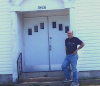
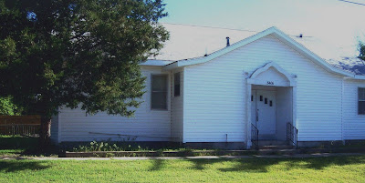

Why "Mr. D"?
2/26/2009
Why "Mr. D's" Daily Journal? My name "Mr. D." goes all the way back some 50 years to my early days as a ventriloquist. My primary motivation for learning ventriloquism was to use the ventriloquist figure as a unique and communicative tool in my Sunday School classroom. For many years I taught weekly classes to students in grades 4-7. Object lessons were always a part of my teaching, so ventriloquism was a just a natural part of my collection of instructional tools.
{kind=link}

I've always suggested students skip the formalities of "Mr. Detweiler" and simply address me as "Mr. D." And that's how I'm still addressed today by a couple generations of people who know me best. The photos at right and below were taken last May (2008). I'm standing in front of the building in Wichita, Kansas that was the location of our community church for more than a decade. My very first ventriloquist presentations were in this very building. I remember those programs like they were yesterday!
